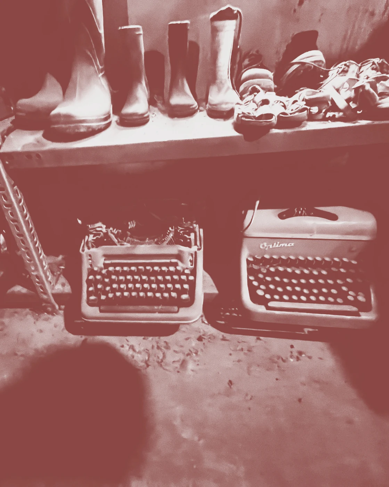

Biografía
Ubicado a 18 kilómetros al sur de la ciudad de Linares, se encuentra una casa patronal de adobe que data de 1952.
Siendo en su momento una casa habitada por la familia Aravena, actualmente es un museo que dispone de un catálogo de más de 1000 objetos partícipes de la vida campesina del siglo 20, desde: Garrafones de vino, tocadiscos, hasta televisores de tubo.
Puedes venir a visitarnos y poder recorrer un poco de los objetos que nos acompañaron en nuestra historia.
VOLVER ATRÁS